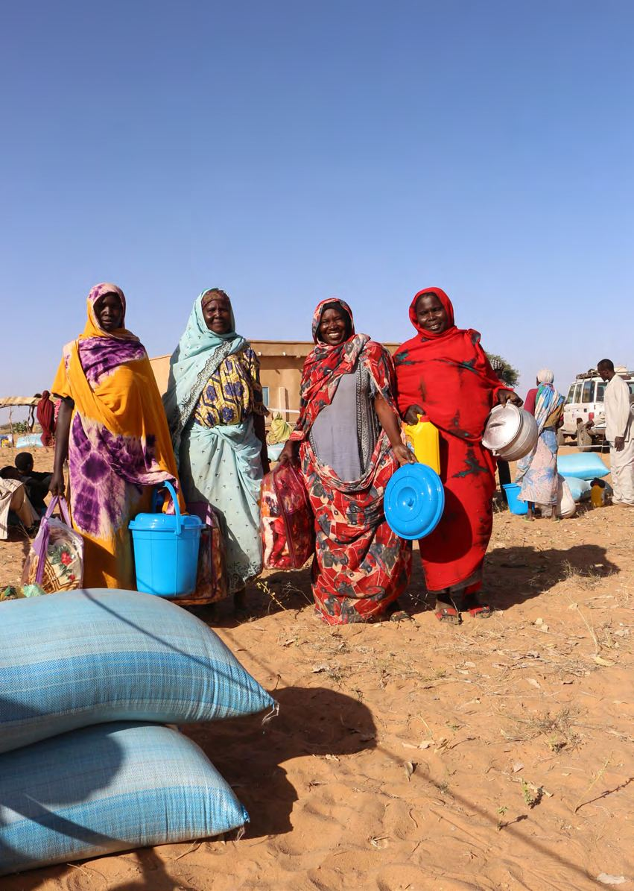
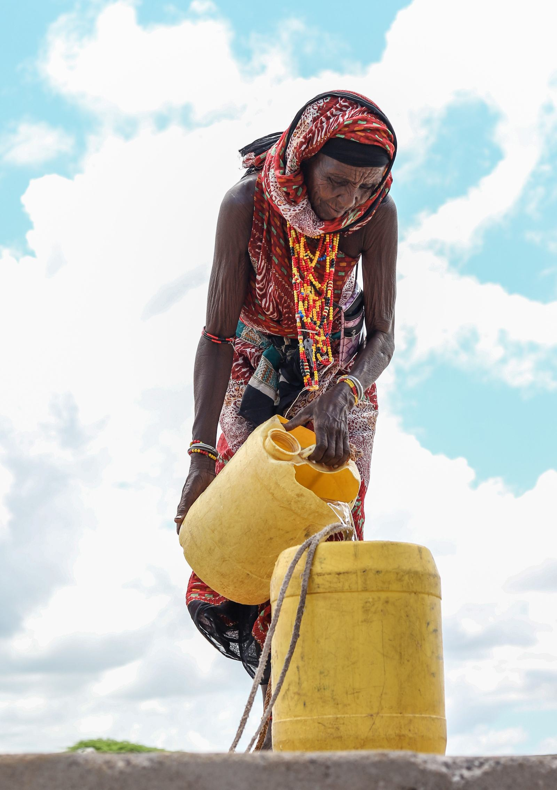
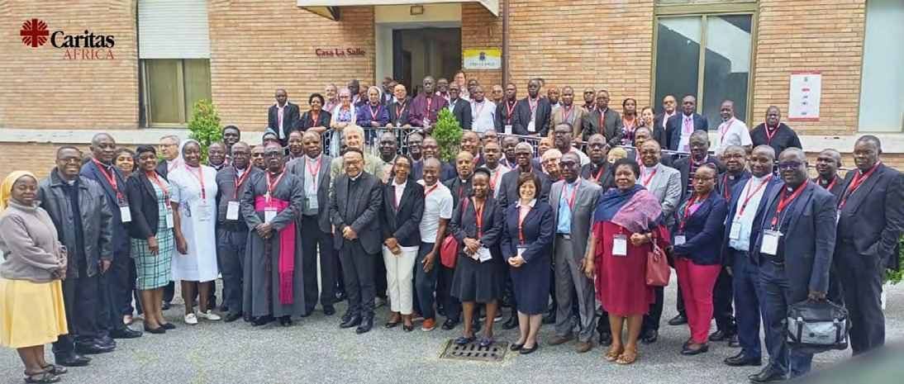
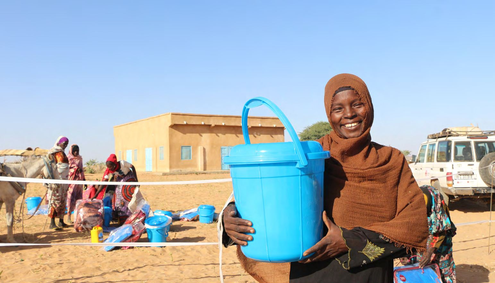

Répondre aux urgences humanitaires
Répondre efficacement aux urgences humanitaires, aux côtés des Caritas nationales de chaque pays.
Photo : Caritas Africa, cadre stratégique 2024–2030

Caritas Africa est le ministère de la pastorale sociale de l'Église catholique en Afrique : 46 Caritas nationales au service des pauvres et des plus exclus.
Depuis 1995, 46 Caritas nationales cheminent ensemble au service des plus pauvres.
Caritas Africa anime, coordonne, représente et renforce 46 Caritas nationales, pour que chacune serve au mieux les plus pauvres de son pays.
Aider l'Église en Afrique à exercer son ministère de charité et de justice : aider les plus pauvres, répondre aux urgences humanitaires, promouvoir le développement humain intégral.
Soutenir les Caritas membres dans leur mission de charité et de justice sociale, et faciliter la coordination et la synergie de leurs actions.
Animation, coordination, représentation, plaidoyer, développement institutionnel et renforcement des capacités.

Caritas nationales, dans 46 pays d'Afrique. Îles comprises, organisées en six zones, chacune coordonnée par une Caritas nationale.
Inspirés par l'Évangile, nous travaillons dans un esprit de communion, de coopération fraternelle et de partenariat pour une Afrique meilleure.

Répondre efficacement aux urgences humanitaires, aux côtés des Caritas nationales de chaque pays.
Photo : Caritas Africa, cadre stratégique 2024–2030

Donner aux personnes marginalisées et défavorisées les moyens d'agir et de plaider pour des communautés résilientes, avec leur propre participation.
Photo : rapport annuel 2021

Promouvoir le développement humain intégral, avec une attention prioritaire aux plus démunis.
Photo : rapport annuel 2021

Le plaidoyer auprès des institutions africaines et internationales, comme la déclaration conjointe au sommet UA–UE.
Sommet extraordinaire de l'Union africaine, Malabo, mai 2022. Photo : rapport annuel 2022
Lire la déclaration
Phase 3 du programme A2P-DIRO, 2019–2023 : un accompagnement de proximité personnalisé pour le renforcement organisationnel et le changement des Caritas en Afrique subsaharienne.
2,5 M€
de budget total pour cette troisième phase.
17 pays
avec 17 Caritas nationales et 202 Caritas diocésaines comme parties prenantes directes.
40 millions
Plus de 40 millions de personnes vulnérables dans la population ciblée.
Découvrir le programme
Notre mission · Actes 1:8« Témoigner de l'amour de Dieu »
À travers des œuvres de charité et de justice, en vue d'assurer le développement humain intégral, avec une attention prioritaire aux pauvres et aux plus démunis.
Notre vision · Jean 10:10« La vie en plénitude pour tous »
Des communautés épanouies en Afrique, où l'amour, la réconciliation, la justice, la paix et la prospérité prévalent pour tous, et où la dignité de chaque femme, homme et enfant est promue.
Photo : Caritas Africa, cadre stratégique 2024–2030
Les prises de position du réseau, la vie des Caritas nationales, et les offres du secrétariat de Lomé.
Nos rapports annuels, notre cadre stratégique et les réflexions du réseau, en français, anglais et portugais.
Rejoignez Caritas Africa dans son engagement pour la justice et la charité envers les plus défavorisés, aux côtés de 46 Caritas nationales.